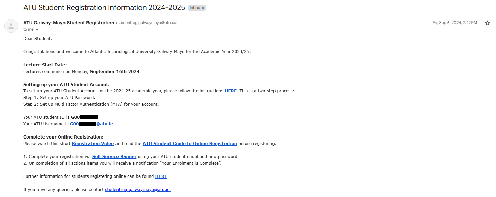
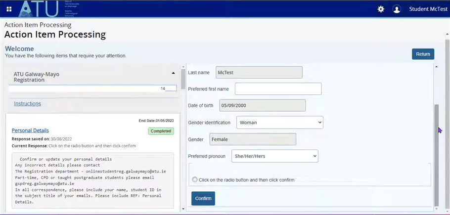

Welcome to the ATU! Follow the steps below to complete your student registration and get started with your academic journey
The first thing you will need to do as a new student at ATU is complete your registration. After being accepted into ATU you will recieve an email with your student email and number like this one:

Set up your student account as per the intructions in the email. You must then access the Student Self Service profile, the link to which will also be in the email. From there, fill in the return to campus survey. Then you can begin filling in your details in the personal details section.

Take your time and make sure every blank is filled in correctly. Remember to click the radio button before clicking confirm for each section. Have a passport style photo of yourself ready to upload. This will be used on your student ID. After filling in all your details they should go from being "pending" to "complete" ! You will be asked if you'd like to pay your fees now or later. For more information on fees, click here Click confirm enrollment and you're done! if you need some more help, here is a video from ATU showing how to register:
If you are still having trouble, don't worry, you can get help with registering at the college. Not everyone will be fully registered at the start so there is no need to panic.